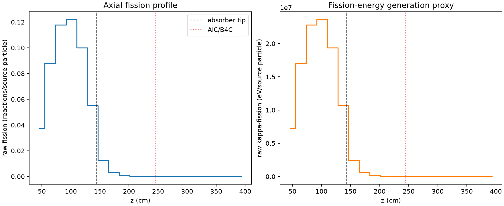
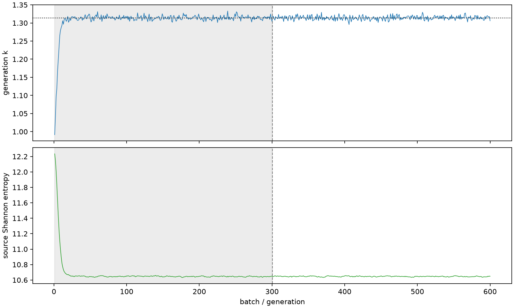

| field | value |
|---|---|
| experiment | V2-STAGE_128_OGRENCI_04-0024 |
| k | 1.3139057321222851 |
| MC standard error | 0.00018028412509821196 |
| seconds | 1091.440337295 |
| acceptance | not_assessed |
| convergence | review_required |
Completed is output integrity only; physical and statistical review required. Zero tallies do not prove zero production or zero uncertainty.
| diagnostic | value |
|---|---|
| geometric fuel voxels | 5280 |
| zero fission tally voxels | 1696 |
| low signal fuel voxels | 2590 |
| low signal fission share | 0.00010697468997943921 |
| low signal kappa share | 0.0001070115518614493 |
| important fission share | 0.9502408318674946 |
| previous filter included | 2690 |
| duration estimate s | 1562.5173488400023 |
| actual minus estimate s | -471.0770115450023 |
| fission relative MC error | statistics |
|---|---|
| all_geometric_fuel | {"voxels": 5280, "positive_mean_voxels": 3584, "zero_mean_voxels": 1696, "undefined_relative_error_voxels": 1696, "median": 0.016256958116285643, "p95": 0.8258532103038975, "maximum": 1.0000000000000002} |
| low_signal | {"voxels": 2590, "positive_mean_voxels": 894, "zero_mean_voxels": 1696, "undefined_relative_error_voxels": 1696, "median": 0.482076331291023, "p95": 1.0, "maximum": 1.0000000000000002} |
| important_95pct | {"voxels": 1509, "positive_mean_voxels": 1509, "zero_mean_voxels": 0, "undefined_relative_error_voxels": 0, "median": 0.005877705669650011, "p95": 0.009155228169396491, "maximum": 0.01037492978475789} |
| outside_previous_filter | {"voxels": 2590, "positive_mean_voxels": 894, "zero_mean_voxels": 1696, "undefined_relative_error_voxels": 1696, "median": 0.482076331291023, "p95": 1.0, "maximum": 1.0000000000000002} |
| kappa_fission relative MC error | statistics |
|---|---|
| all_geometric_fuel | {"voxels": 5280, "positive_mean_voxels": 3584, "zero_mean_voxels": 1696, "undefined_relative_error_voxels": 1696, "median": 0.016234596785520895, "p95": 0.8246854880487473, "maximum": 1.0000000000000002} |
| low_signal | {"voxels": 2590, "positive_mean_voxels": 894, "zero_mean_voxels": 1696, "undefined_relative_error_voxels": 1696, "median": 0.4810022035378394, "p95": 1.0, "maximum": 1.0000000000000002} |
| important_95pct | {"voxels": 1509, "positive_mean_voxels": 1509, "zero_mean_voxels": 0, "undefined_relative_error_voxels": 0, "median": 0.0058716977408187765, "p95": 0.009145072118004879, "maximum": 0.010363411076035492} |
| outside_previous_filter | {"voxels": 2590, "positive_mean_voxels": 894, "zero_mean_voxels": 1696, "undefined_relative_error_voxels": 1696, "median": 0.4810022035378394, "p95": 1.0, "maximum": 1.0000000000000002} |
| axial bin | fission share | kappa-fission share |
|---|---|---|
| 1 | 0.06976739521370583 | 0.06976924078432037 |
| 2 | 0.16405831296924833 | 0.16405597001290342 |
| 3 | 0.21939939987153406 | 0.21939575018828494 |
| 4 | 0.22709754508754063 | 0.22709400729613902 |
| 5 | 0.18619279655167045 | 0.1861900633302546 |
| 6 | 0.10264456274739332 | 0.10264580663290444 |
| 7 | 0.02303535818103611 | 0.02304211732486685 |
| 8 | 0.005808803989909856 | 0.005810571566873887 |
| 9 | 0.0014905932304113878 | 0.0014910732005809736 |
| 10 | 0.00037999172657233744 | 0.0003801162373709442 |
| 11 | 9.680444720846646e-05 | 9.683646423152714e-05 |
| 12 | 2.3393715800728238e-05 | 2.3402800680552317e-05 |
| 13 | 4.705043920734759e-06 | 4.706916412553775e-06 |
| 14 | 3.091564632629613e-07 | 3.092064422066158e-07 |
| 15 | 2.806758453186388e-08 | 2.803773354291463e-08 |
| 16 | 0.0 | 0.0 |
| 17 | 0.0 | 0.0 |
| 18 | 0.0 | 0.0 |
| 19 | 0.0 | 0.0 |
| 20 | 0.0 | 0.0 |
Histories include the inactive-to-active transition at batch 300. kappa-fission approximates fission energy production, not total heat deposition.

